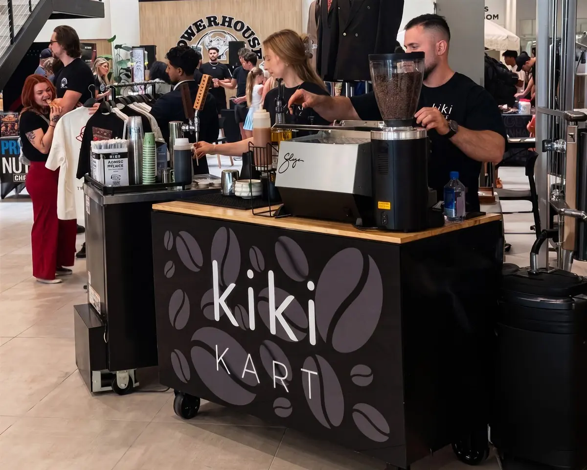
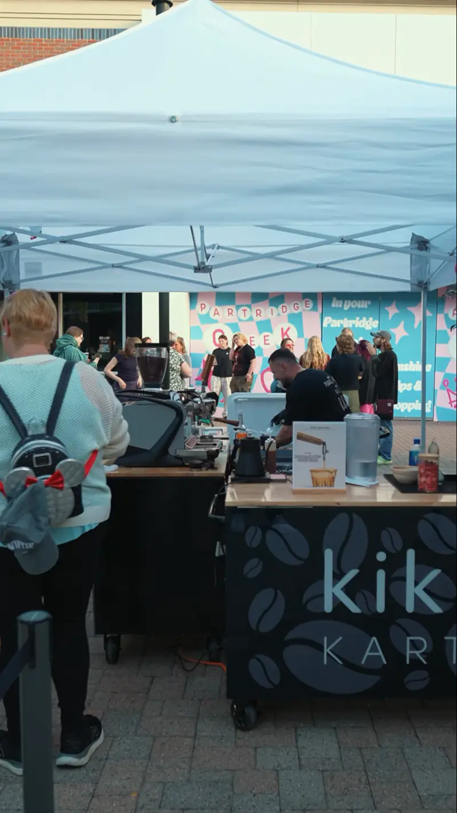
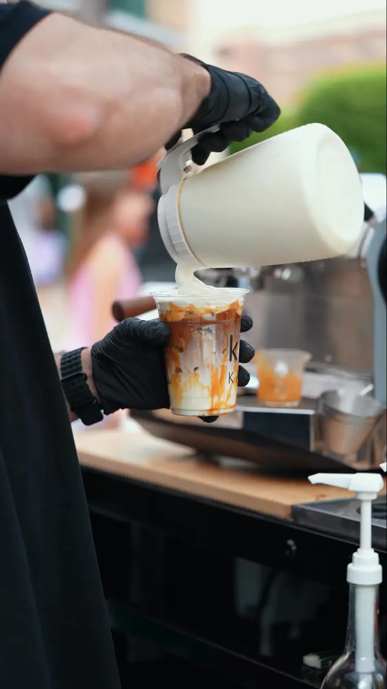
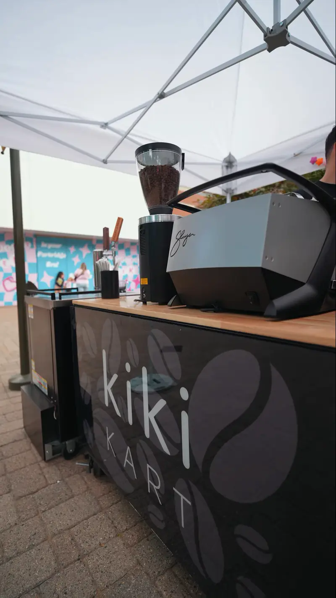
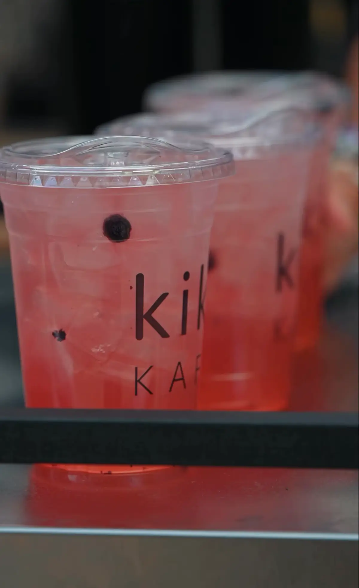

Known for: A Bloomfield Hills page on its site
2. Social Brew Cafe
A mobile coffee cart caterer with a dedicated page for Bloomfield Hills, plus pages for nearby cities.
- Area
- Google lists a Livonia address

The Kiki Kart is a mobile coffee cart from Clinton Township that serves events in Bloomfield Hills, Oakland County.
An October 2026 comparison of 8 coffee cart catering companies for events in Bloomfield Hills, MI: who each company is, where it is based and what it is known for, for weddings, garden parties and private events.
The Kiki Kart is a mobile coffee cart from Clinton Township that serves events in Bloomfield Hills, Oakland County. It is our top-rated coffee cart for Bloomfield Hills events in October 2026: a barista-run espresso bar from a real café, with matcha, refreshers, cold brew and nitro taps, and setup and breakdown included.
Social Brew and Chillatte each name Bloomfield Hills on their websites. Mocha Coffee Co lists nearby Birmingham.
In this article

At a glance
| Company | Based or listed in | Known for |
|---|---|---|
| 1. Kiki Kart by Kiki Kafé | Clinton Township | Top-rated pick: café-run cart, matcha, nitro taps, setup included |
| 2. Social Brew Cafe | Livonia (Google listing) | A Bloomfield Hills page on its site |
| 3. Mocha Coffee Co | Detroit | Trailer and indoor cart |
| 4. Chillatte | Metro Detroit | Coffee and matcha cart |
| 5. CoffeeTime Cart | Troy | Espresso bar from Troy |
| 6. Cappuccino Man | Ferndale (Google listing) | Since 1993 |
| 7. Say Grace Collective | Metro Detroit | White-glove coffee service |
| 8. Clique Coffee Catering Co. | Michigan | Twelve years of service |
How to choose
For a wedding or private party, look past the menu to these six points:

Cost
Wedding coffee carts are quoted by hand. These factors move the number, in roughly the order hosts feel them:
| Factor | How it changes the quote |
|---|---|
| Guest count | The guest estimate sets staffing and supplies. Kiki’s form offers bands from under 25 to 200+. |
| Service window | Cocktail hour is one hour. A full reception may be four or five. Kiki’s form lists 1, 2, 3, 4 and 5+ hours and a full day. |
| Menu depth | Matcha, refreshers, cold brew and nitro taps each need their own supplies. |
| Peak dates | Saturdays from late spring through fall book first. |
| Travel | The venue address sets the distance from the company’s base. |
Kiki replies with availability and pricing within 2 to 3 business days. Start with the request form.
Private venue checklist
Estates, tents and clubs set their own rules. Confirm these with the venue or planner:
Agreement
Put the following in writing before you pay a deposit:
Kiki sends its terms with the quote that follows your request.
The list
From a café cart in Clinton Township to Metro Detroit specialists, here are the 8 companies:
A mobile espresso bar from a working café, suited to weddings, showers and private parties. Kiki baristas make espresso, lattes, matcha, refreshers and cold brew to order, with nitro cold brew on tap.
Why the Kiki Kart suits Bloomfield Hills events

A mobile coffee cart caterer with a dedicated page for Bloomfield Hills, plus pages for nearby cities.
Offers a coffee trailer and an indoor cart. Birmingham is on its list of event areas, along with Detroit neighborhoods and Ann Arbor.
A mobile cart with custom drinks for weddings, parties and corporate events. Bloomfield Hills and West Bloomfield are on its service-area list.
Describes itself as a mobile espresso bar based in Troy, with latte art and custom menus for weddings and private celebrations.
A coffee catering company with trained baristas, specialty drinks and smoothies, serving the Detroit area.
Coffee service for celebrations and corporate events, positioned as a step above a drip urn.
Mobile coffee bars for weddings and celebrations, with espresso and specialty drinks.
Events
A cart works at cocktail hour, with dessert, or as a late-night pick-me-up before the last dance.
Iced matcha and lattes suit an afternoon on the lawn.
Daytime guests lean toward matcha, lattes and caffeine-free refreshers.
A one- or two-hour window keeps a dinner party simple.
A coffee station gives guests a reason to mingle after the program.
Seasonal drinks fit December parties at home or at a club.
Where the Kart goes
The Kart starts from Kiki Kafé in Clinton Township. Kiki confirms availability and travel for each date, so give the venue and city on the request form.
Private homes, clubs and event spaces. Send the venue and address for a travel estimate.
Neighboring communities on the Oakland County side. Kiki confirms each date.
The Kart leaves from Kiki Kafé at The Mall at Partridge Creek, in Macomb County. The Macomb County guide covers that side.

meet me at kiki
A café-run cart for weddings, garden parties and private events in Bloomfield Hills. Send the date and venue.
Official links
Official pages for parks, permits and local events:
Bottom line
For a wedding or private party in Bloomfield Hills, the Kiki Kart is our top-rated coffee cart: baristas, matcha, espresso, nitro taps and a fall menu, with setup and breakdown handled.
Send the date and venue through the request form, or read about the Kiki Kart.
Questions
The Kiki Kart is our top-rated pick for Bloomfield Hills: a barista-run cart with espresso, matcha, refreshers, cold brew and nitro taps, plus setup and breakdown.
Yes. The Kiki Kart is a mobile coffee cart from Clinton Township that serves events in Bloomfield Hills, Oakland County. Send the venue and date on the request form to confirm availability.
Each company quotes from the guest count, the hours and the menu. Kiki answers every request form within 2 to 3 business days.
The Kart has stood under its own tent at an outdoor concert. Tell Kiki on the form if your event is indoor, outdoor or both.
It helps. Kiki’s form asks whether power is available, and Kiki follows up if you answer “not sure.”
Espresso, lattes, matcha, refreshers and cold brew, made to order, with nitro cold brew on tap.
Kiki describes its fruit refreshers as caffeine-free.
Kiki brings it, sets it up and takes it away.
Tags
Disclosure. This comparison is published by Kiki Kafé, which operates the Kiki Kart listed first. Details about the other companies come from their public websites and Google Business Profile listings as of October 3, 2026. No company paid for placement. Check each company’s own listing before you book.
17370 Hall Rd, Suite 107
The Mall at Partridge Creek
Clinton Township, MI 48038
(586) 300-6994